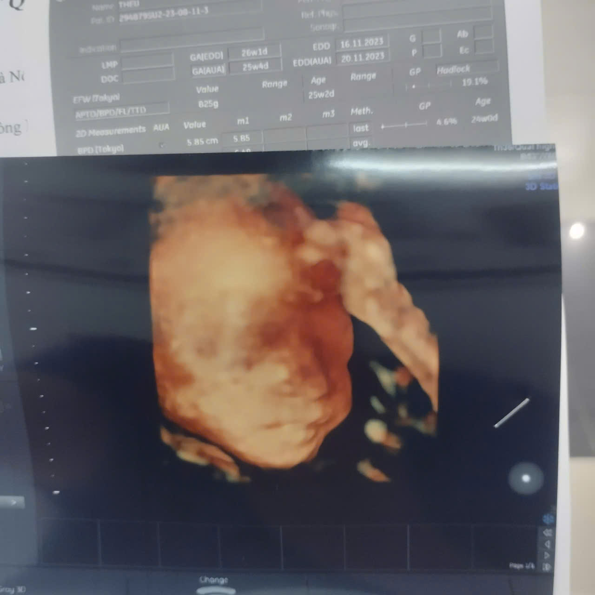
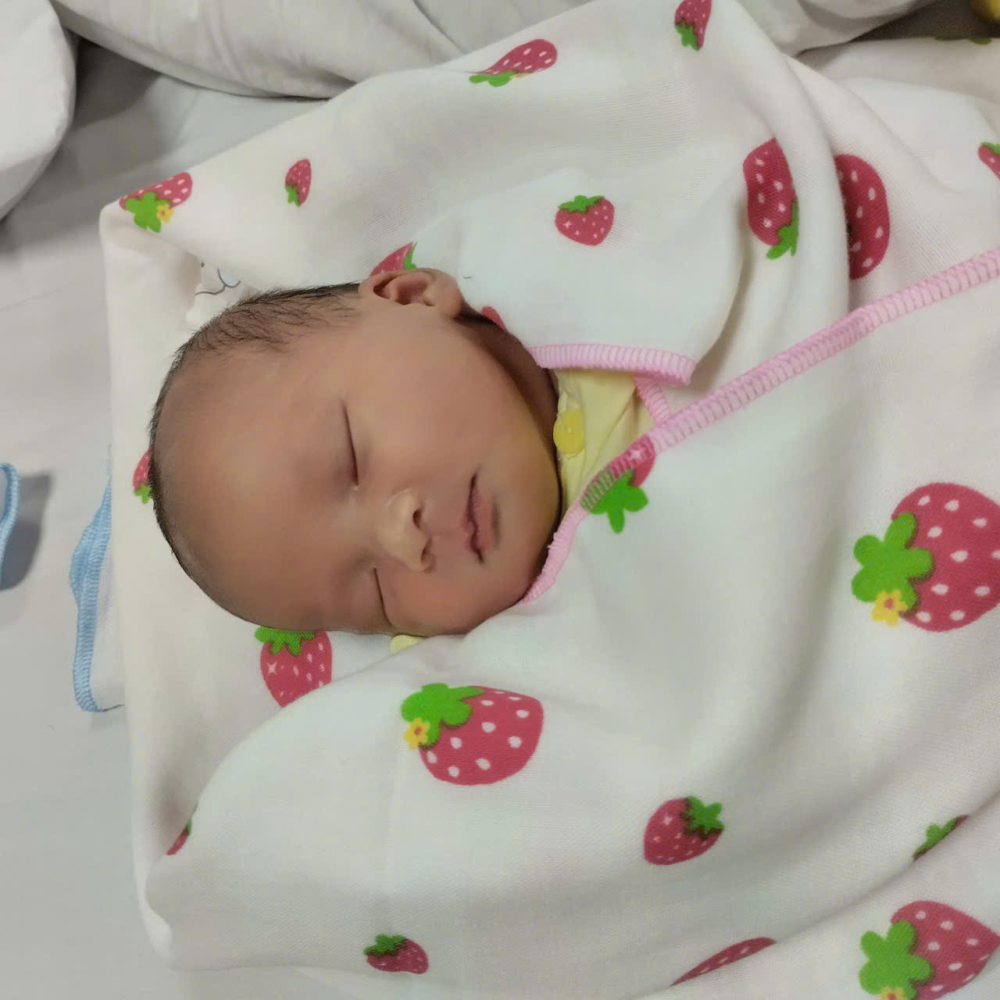
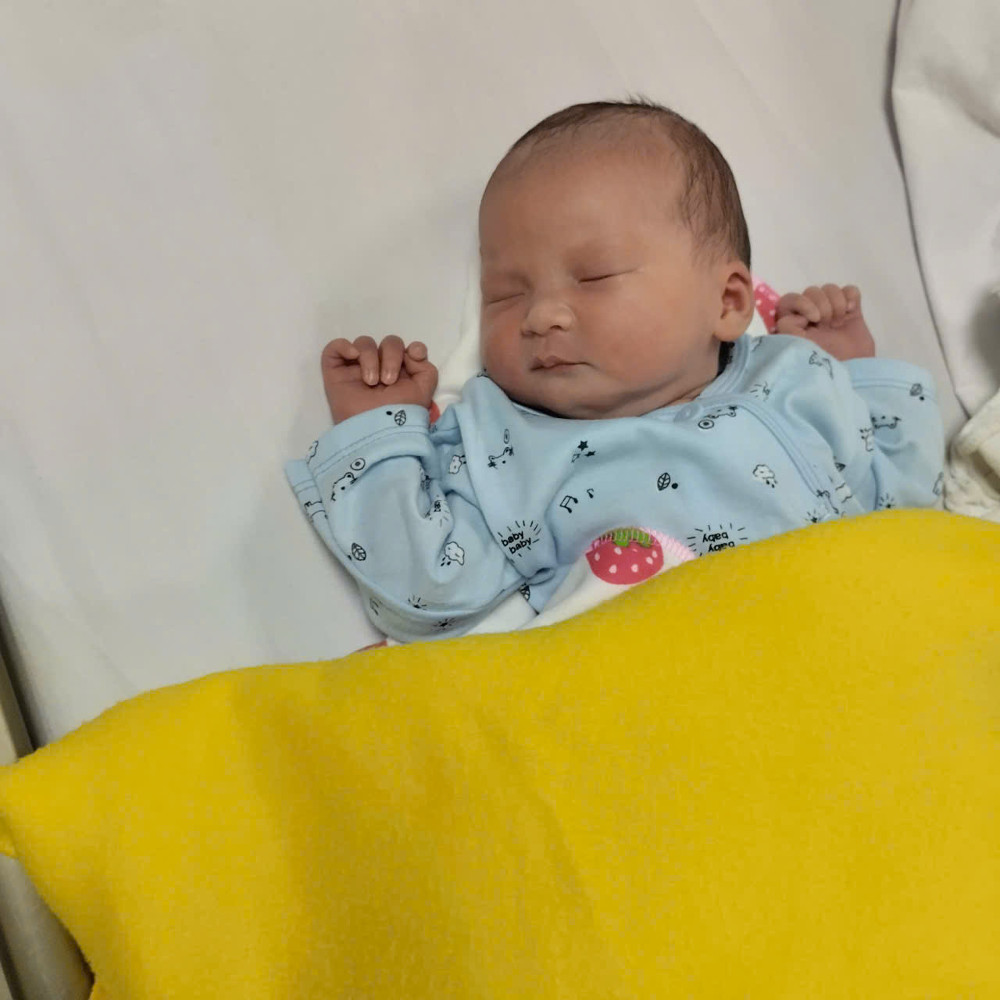
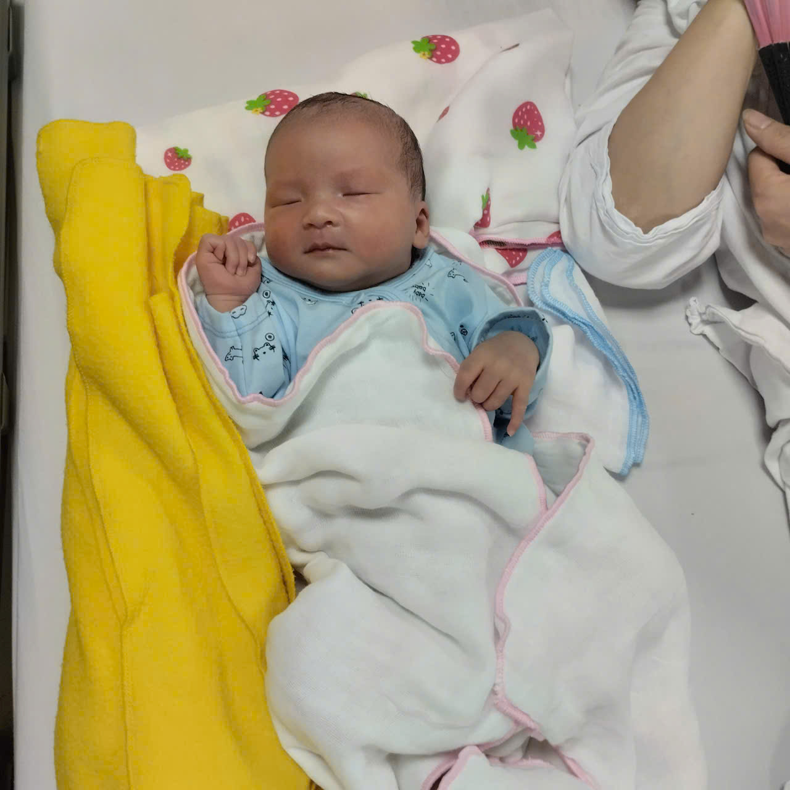
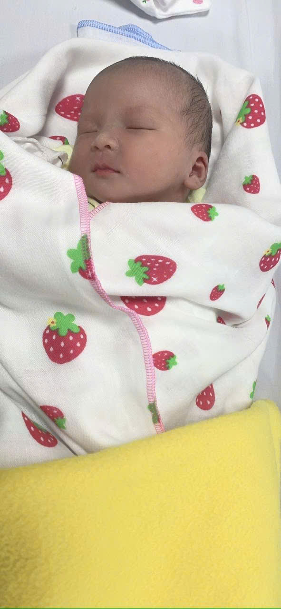
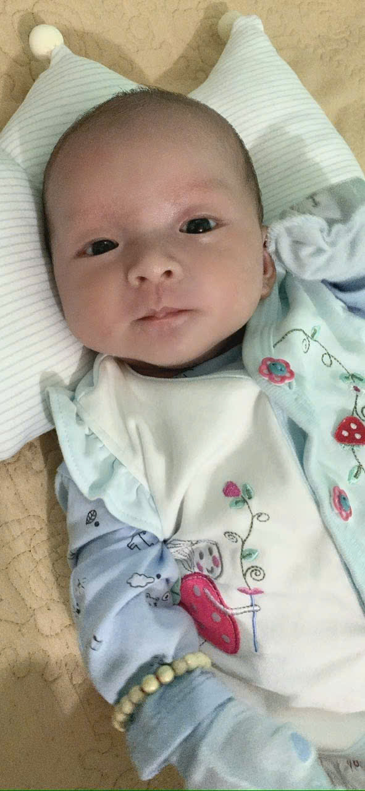
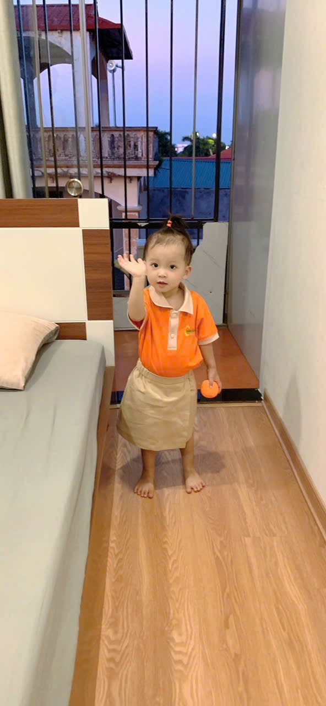

FAMILY JOURNAL
Dâu Tây’s Journey
From the first two pink lines to the days of growing up — the story of Dâu Tây and our family.
Some stories begin with a very small moment. For our family, Dâu Tây’s story began with two pink lines on a pregnancy test, and continued through ultrasound images, the day our child was born, and the years of growing up with us.
February 14, 2023 — The first two pink lines
On February 14, 2023, we began using a pregnancy test.
It was the day a great joy began to enter our family. When we learned there was a baby on the way, both of us were very happy. The thought of becoming parents brought a special kind of happiness. From that moment, a new little person became part of our family story — the baby we would lovingly call Dâu Tây.
We did not take a photo of the pregnancy test that day. The two pink lines became an early milestone in our family’s story, one we still remember with happiness.
Just two small lines, yet they opened the door to so many new things. From that day on, we began looking forward to meeting someone who would bring feelings we could not yet fully imagine.
Dâu Tây, before you were in our arms, you were already a great joy in our hearts.
The first images of Dâu Tây
After the day we learned about you, we began collecting ultrasound images of Dâu Tây.
In those pictures, we saw you on the ultrasound screen, in different views of the little baby growing inside your mother. They are special images because they preserve a time when you were still inside Mom, while we were waiting for the day we could meet you.
Looking back at the ultrasound pictures, we can see that your journey was being recorded from very early on. From the two pink lines to the images on the screen, our first joy gained keepsakes we could hold on to.
Some moments do not need a perfectly clear photograph or a long story to become meaningful. Sometimes, looking at an old image is enough to remind us that it belongs to our family’s story.
These ultrasound images will always have a special place in Dâu Tây’s journal — memories from before the day you were born.

The months of waiting for you
After learning that Dâu Tây was on the way, our family entered a new chapter.
You were still inside Mom, while we began keeping your first milestones through images and memories. That time is an important part of our family story, even though not every moment was captured in a photo or in words.
Looking back, we want to set aside these lines for the time before you were born. Your journey did not begin only on November 1, 2023. It began when we learned you were coming, with the first ultrasound images and the months we spent waiting to welcome a new member of our family.
There are still things we have not told here. We may add an old photograph, a memory that comes back to us, or a story we want to share with you when you are older.
All of it deserves to be kept, because these were the first days of your journey.
November 1, 2023 — Dâu Tây was born
On November 1, 2023, Dâu Tây was born.
That date became an important milestone in our family story. The baby we had learned was coming in February now had a birthday of their own — the beginning of a new journey outside Mom’s womb.
If February 14 was the day we learned you were on your way, November 1 was the day you officially entered our family’s world.
We want to remember this not only as your birthday, but as the moment that connects the months of waiting with the journey of growing up that followed.
Your first photographs, memories from that special day, and stories surrounding your birth will be precious parts to add here.





From the baby we awaited to Dâu Tây today
Time has passed. The baby we once waited for is now almost three years old.
Looking back from the pregnancy test to today, we see that your story is made of many milestones. Some are preserved in photographs, such as the test and ultrasound images. Others remain in our memories, waiting to be told in words.
We want to keep this story so that one day you can read it, look at pictures from your earliest days, and know how much your family has cherished your journey.
This journal will not end with the day you were born. It will continue through the years ahead — as you grow, and as our family shares new trips, experiences and memories.
Today, Dâu Tây is almost three. Your story is still unfolding, and we want to keep each chapter in our own way.

A note to our Dâu Tây
Dear Dâu Tây,
On February 14, 2023, we took a pregnancy test and learned that our family was going to have a baby. We were both so happy. We did not take a photograph of the test that day, but those two pink lines became a keepsake in our family story.
Then we had your first ultrasound images. They remind us of the time you were still inside Mom, when we were waiting for the day we could meet you.
On November 1, 2023, you were born. And today, you are almost three years old.
We are writing these lines so you will know that your story began long before you could read them yourself. We want to preserve your journey through photographs, memories and the stories of our family.
One day, when you are older, we hope you will enjoy looking at old pictures, reading about the day we learned you were coming, and discovering each page of your own journal.
We will keep writing. Your story is still long, and our family has many more days to share together.
With all our love, Dâu Tây.
Mom and Dad — Nhà Mình Journal